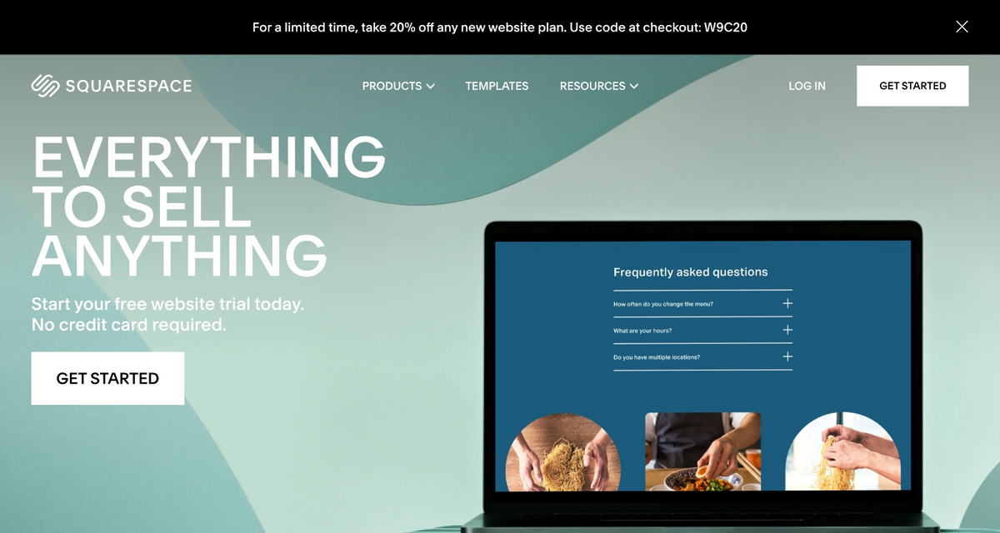
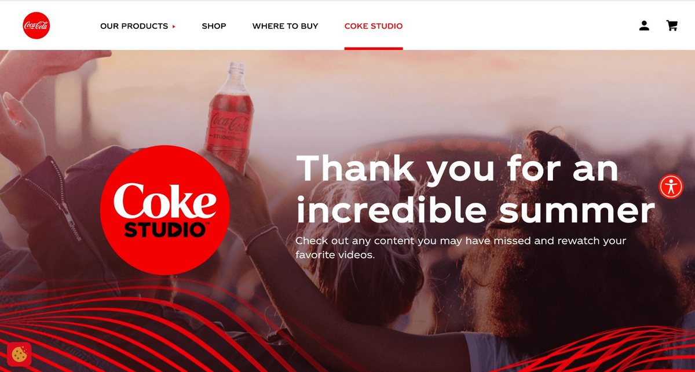
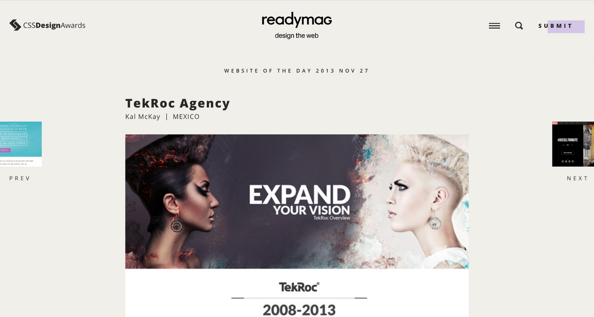

Design Principles Document
Gerald CELESTIN
White Space
square Space
www.squarespace.com Square Space has enough white space that makes the website looks nice, simple and has a nice view easy for anyone to read.
Alignment
Coke Studio
www.cokestudio.com Coke Studio has an effective alignment, the headlines are aligned in left-aligned. the icon menus are well aligned, Coke Studio looks very easy to read and navigate through.
Contrast
Tekroc
tekroc.com Tekroc has a good contrast in color, the background color clearly appears the text and gives the website a good feeling where readers can read without losing focus on what they are reading on the website.